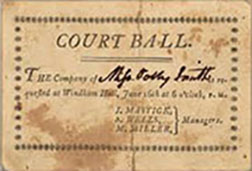

You have been invited to the Hart family Ball of January 1850 with 150 other guests.
Richard and Betsey Hart were well-to-do and had 14 children, 8 of whom were daughters.
Sponsoring a Ball was an opportunity for them to meet suitors for eventual marriage.
This app will lead you on a guided tour where you can interact with people of Troy in 1850.
To begin your visit, point your mobile device toward the clock in the hallway.
Tap on the images that appear to open a question and answer dialogue.
Good evening. Welcome to the Hart House.
We have dancing in our parlor, and oysters, roasted grouse and champagne in our dining room.
If there is anything that you need, I will be delighted to assist you.
Our Balls start at 9 o'clock and usually last until 3 in the morning.
To tell you the truth, Balls are not for me.
I was born in Ireland and immigrated to Troy to escape the Potato Famine.
The Harts are one of the few families in Troy to employ Irish maids and Black coachmen.
Mrs. Hart is kind enough to pay me $1.00 a week, with free room and board.
Mrs. Hart's mother, Mrs. Howard, sent me with her to keep her company and help her adjust to her life in Troy.
I've cooked and cleaned for her and even helped her birth her children.
I have worked from dawn to dusk, helping the other two Irish maids cook, clean and
attend to the 14 children. We have cleaned the gasolier gloves, moved the front parlor furniture to the back parlor
and rolled up the carpets to make room for dancing.
This Drawing or Sitting Room has ice desserts and champagne punch.
Guests can sit in this room with their food and drink to mingle with others.
They served flavored desserts of elaborately carved ice, and baked scones.
This room is for guests to meet others while enjoying oysters and champagne from the dining room.
Guests can rest their feet from dancing in the parlor, on the other side of the hallway.
Mr. Burden has drank himself into quite a fix. I've already told him I have saved
my last dance for Mr. Richard Hart. Mr. Burden is in no condition to dance with anyone,
including himself.
Heavens no! At the ball, the men must approach the women and ask for a couple's dance,
like the polka and the Waltz. It would be improper for me to ask Mr. Hart. Line dances,
however, are an exception.
A couple's dance is a close dance, with both partners arm in arm. The Waltz popularized
this type of dancing in my mother's time. However, the polka is more popular these days.
It uses a gliding chase step and turning hop, rather than the dizzying spins of the
Waltz.
Miss Tillman has refused any more offers to dance with me. She says I have had one too
many smiles of punch because I fell during the Virginia Reel.
It can be served on ice, with punch, or even alone. Technically, champagne is the name
of sparkling wine from the Champagne region in France. The science of making sweet,
sparkling wine is better understood today as well, especially since the process of
riddling the sediment has been improved, making the drink more bubbly than it's
ever been!
Well, it's all the craze in Europe right now since glassmaking and mechanical corking
were perfected. You can find it advertised in all the magazines, newspapers, and
billboards. And, it's a perfectly respectable drink for ladies. Champagne is the
preferred drink of the rich and famous!
The Harts hired a 9-piece band who set up at the end of the hallway.
They played this Virginia Reel and Polka songs for guests to dance in the parlor.
A folk dance that dates from the 17th century, with Scottish and English roots.
Couples form two lines facing each other, with men on one side and women on the other.
They meet as a couple at one end, and dance between and down the lines to the other end.
The band will play until the last guests leave, usually until 3 in the morning.
Mrs. Hart does not stay up that late as she is 51 years old. In fact, she leaves
the house by 11 o'clock and stays in another residence in Troy.
My name is Richard Hart Jr. and I am 24 years old, the seventh of 14 children.
I am hoping to meet my future wife at this Ball tonight.
Maria Tillman is in the parlor, and I shall ask her to dance.
I work as an accountant at the local accounting firm.
My parents were married in 1816. My mother, Betsey, has been suffering from the loss of my late father, Richard.
He died in this house in 1843 when a servant accidentally poured kerosene instead of water
while he was smoking a cigar and taking a bath. Mr. Hart had served as Mayor of Troy from 1836 to 1838.
My parents both have had quite an interest in philanthropic causes. My father was one of the founders
of the Troy Orphan Asylum. My mother has strongly supported
education for young women at the Troy Female Seminary.
Eight of my sisters, in fact, have attended the institution.
Mrs. Hart has the finest tastes in town. The oysters arrived from the city this morning, and the
champagne is from France. Our table is decorated with japonica flowers, imported from the Orient.
Food and drink were served buffet-style at this dining table.
Guests filled their plates and glasses, and took their food to the drawing room or parlor to enjoy.
The bill was $132.25 in 1850. This is equal to over $4060 in 2014 dollars.

Mrs. Hart bought oysters, champagne, carved ice desserts and other expensive, imported items.